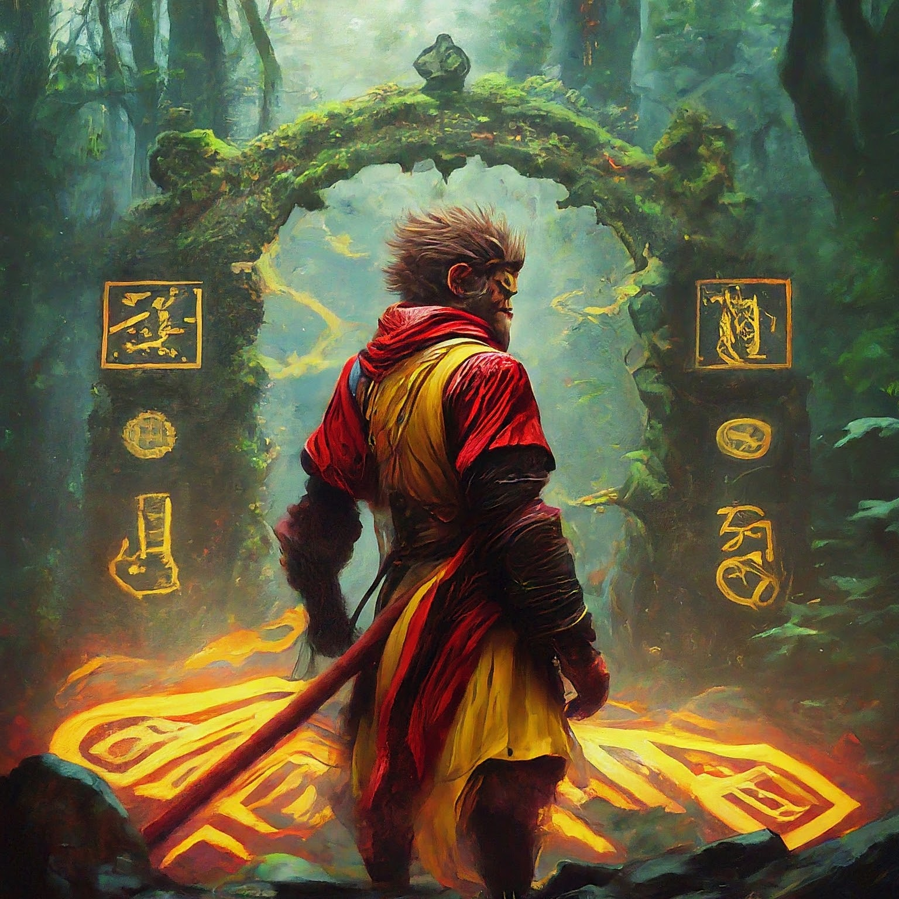

In the heart of the Celestial Kingdom, far beyond the reach of ordinary beings, a hidden realm existed where few dared to tread. It was a place where the realms of gods, spirits, and mythical creatures intertwined in a delicate balance. This was the realm of Sun Wukong, the Monkey King, who had long ago taken up residence in the mystical Mountain of Flowers and Fruit.
One day, while Sun Wukong was practicing his legendary staff skills atop a towering cliff, a strange sensation crept over him. It was as though the very fabric of the universe was whispering a secret to him. With a determined glint in his eye, he decided to investigate the source of this mysterious feeling.
Descending from his mountain home, Sun Wukong journeyed through enchanted forests and across shimmering rivers, each step guided by an invisible force. His path led him to a hidden valley veiled by thick mist and surrounded by ancient trees that seemed to hum with life.
In the heart of the valley stood an ancient, ornate gate covered in intricate carvings of dragons and phoenixes. The gate was sealed with a powerful enchantment, but Sun Wukong, with his immense strength and celestial knowledge, could sense a subtle pattern in the magical runes.

With a clever smile, he approached the gate and began to recite an ancient incantation he had learned from his time in the Celestial Court. As his voice echoed through the valley, the runes began to glow and the gate slowly creaked open, revealing a hidden garden bathed in an ethereal light.
As Sun Wukong stepped through the gate, he was greeted by a wondrous sight: a garden filled with flowers that radiated soft, multicolored lights, and fruits that seemed to sing gentle melodies. In the center of the garden stood a majestic tree with shimmering leaves and golden fruit. It was the legendary Tree of Immortality, said to grant boundless wisdom and eternal life.
Approaching the tree, Sun Wukong marveled at its beauty and the energy it exuded. However, he was not alone in his admiration. From the shadows emerged a figure draped in celestial robes, with an aura of ancient power. It was the guardian of the Tree, a being of immense grace and wisdom.
“Welcome, Sun Wukong,” the guardian spoke in a voice like a gentle breeze. “Few have ever found this place, and even fewer are deemed worthy of its gifts.”
Sun Wukong, ever respectful but curious, replied, “I felt a calling and followed it here. What is the purpose of this wondrous garden?”
The guardian smiled warmly. “This garden is a sanctuary for those who seek not only power but also wisdom. The Tree of Immortality grants knowledge to those who approach with pure intentions and a heart full of courage.”
Sun Wukong’s eyes sparkled with determination. “I seek to understand the deeper mysteries of the world and to better fulfill my duties. Will you grant me this knowledge?”
The guardian nodded and, with a wave of their hand, a golden fruit descended from the Tree of Immortality. “This fruit will bestow upon you the wisdom you seek. But remember, true wisdom is not just about knowledge; it is about understanding and compassion.”
With gratitude, Sun Wukong accepted the fruit and took a bite. A wave of enlightenment washed over him, revealing the interconnectedness of all beings and the true essence of his own journey. He realized that his strength was not merely for battle but for protection and nurturing of the world around him.
As he made his way back to his mountain home, Sun Wukong felt a profound sense of purpose. The knowledge he gained would guide him in his future adventures and in his role as a protector of the realm. And though he continued to wield his mighty staff and display his incredible feats, he did so with a newfound wisdom and a heart full of compassion.
The hidden kingdom remained a cherished secret, a testament to the journey of the Monkey King and the boundless wisdom he had earned. And in the tales told across the realms, Sun Wukong’s legacy grew not only as a formidable warrior but as a sage who understood the true essence of harmony and balance.